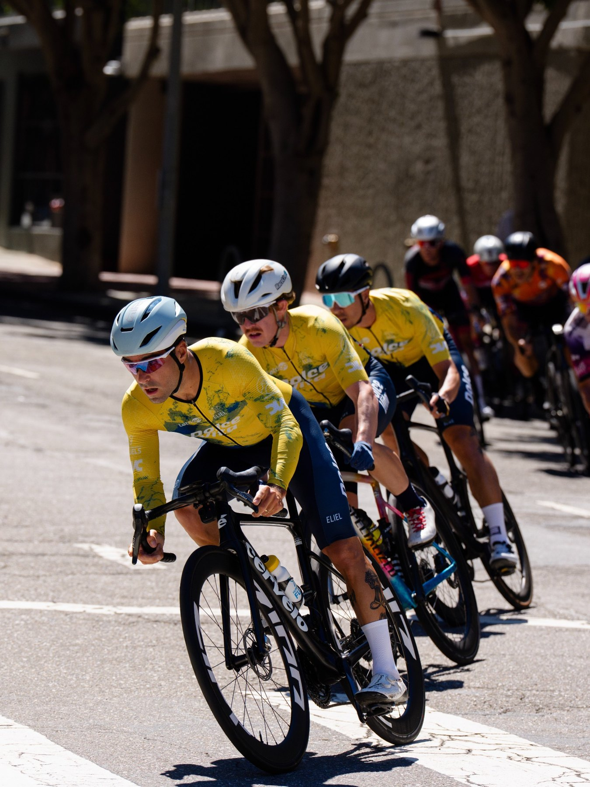

Build.
I build the teams, programs, and operations that grow with the business and deliver at scale. From service delivery and technology to operating models and measurement, I focus on making things work better in practice.
CUSTOMER EXPERIENCE / PROGRAM MANAGEMENT
I'm a Customer Experience leader and Program Manager who leads teams, solves complex problems, and builds practical ways for organizations to scale without losing sight of the customer.
01 / HOW I WORK
Different challenges call for different approaches. These ideas are core to the work I do.
I build the teams, programs, and operations that grow with the business and deliver at scale. From service delivery and technology to operating models and measurement, I focus on making things work better in practice.
I bring people and functions together to solve problems that don't fit neatly within one team. That means connecting customer needs with Product, Operations, and Technology, then creating the structure and shared ownership needed to move work forward.
I turn customer feedback and operational data into a clearer understanding of what's working, what's not, and what to do next. Then I build the feedback loops that help teams act on those insights.
02 / SELECTED WORK
How I've approached complex customer and operational challenges, from understanding the problem to building something that works in practice.
PRODUCT × CUSTOMER EXPERIENCE
Designed and operationalized a new model for how CX partnered with Product, from early development and launch readiness through post-launch customer feedback.
More case studies are in development.
03 / EXPERIENCE
Experience across technology, healthcare, commerce, and consumer businesses.
04 / ABOUT

I enjoy figuring out how things work and building a plan to make them better. Give me a complex problem, a collaborative group of people, and the opportunity to test ideas, measure results, and refine our approach, and I'm in my element.
Outside of work, I'm an amateur competitive cyclist. I build training blocks around specific races and course features, show up for the daily work, analyze my training data, and use what I learn to shape the next block. Just as important is the camaraderie of being part of a team, from sharing a passion for the sport to developing and executing a race-day plan together.
Whether I'm leading a team, building a program, or preparing for a race, I value thoughtful preparation, follow-through, and learning from the results. I care about doing good work, honoring my commitments, and being someone people enjoy working alongside.
05 / LET'S CONNECT
I'm interested in full-time CX leadership and program management opportunities, as well as select advisory work.
Contact details will be added before the public launch.